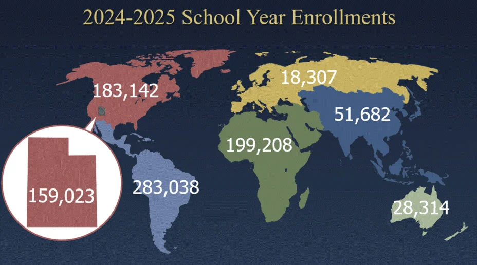
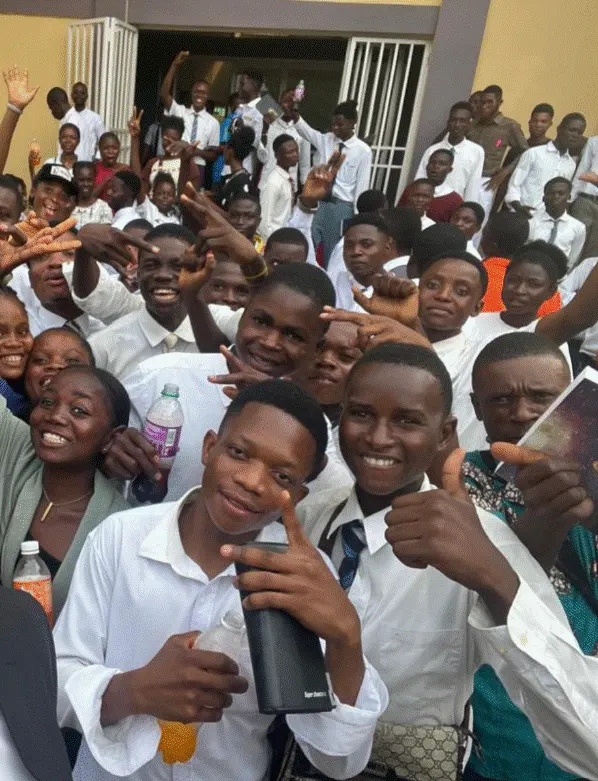
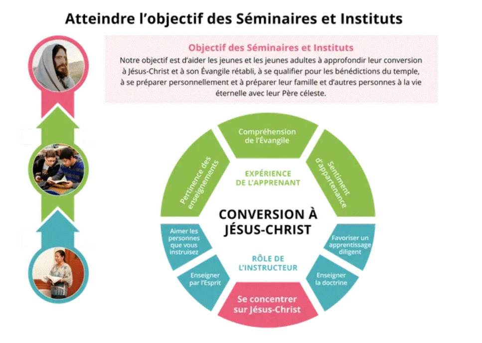
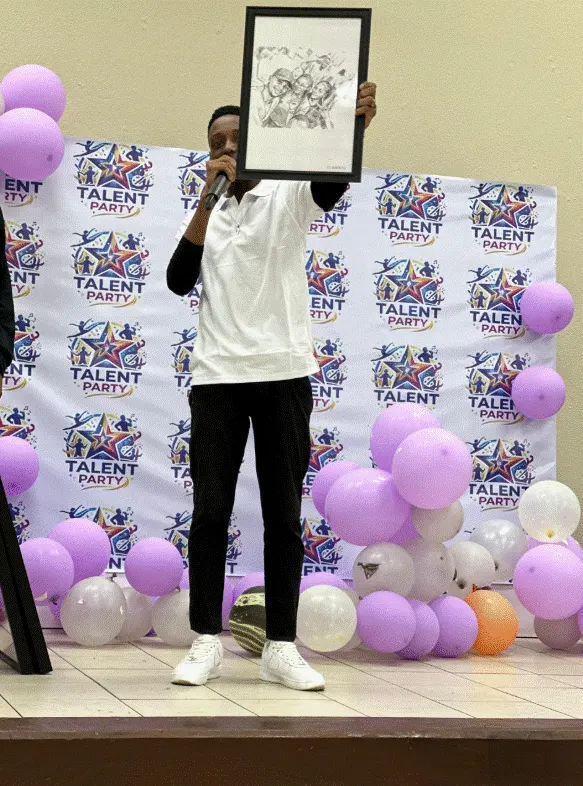
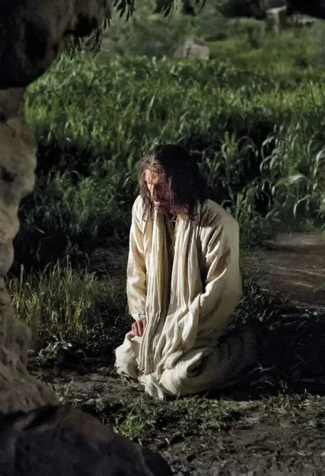

l

The Objective Our purpose is to help youth and young adults deepen their conversion to Jesus Christ and His restored gospel, qualify for the blessings of the temple, and prepare themselves, their families, and others for eternal life with their Father in Heaven. The Strategic Story S&I plays a significant role in the urgent need to gather an entire generation of youth and young adults and to deepen their conversion to Jesus Christ and His restored gospel. S&I strives to do this by: Encouraging all youth and young adults to participate by collaborating to extend invitations and making programs accessible. Teaching in the Saviors Way to foster relevance, gospel understanding, and belonging. Developing capable leaders who innovate and adapt to local needs. Note: Please consider the meaning of these keywords. Conversion – Learners know, love, and follow Jesus Christ and His restored gospel. Relevance – Learners feel that what they are learning is meaningful and useful to their personal circumstances, questions, and needs. Gospel Understanding – Learners attain a positive change in gospel knowledge, behavior, and becoming. Belonging – Each learner is safe and supported, and their contributions are valued.